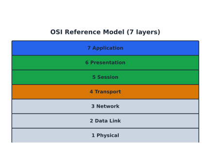
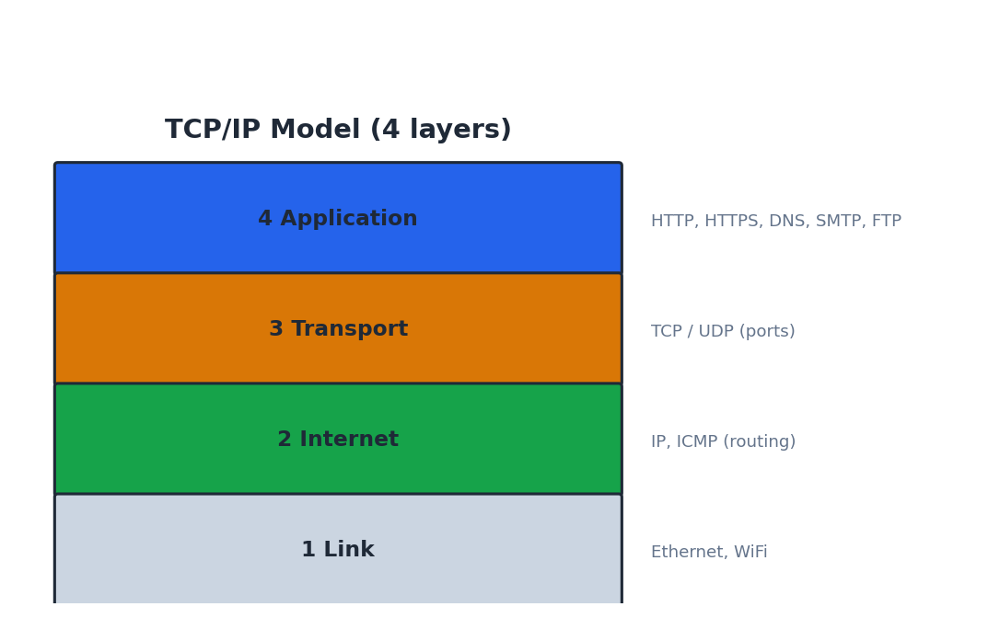
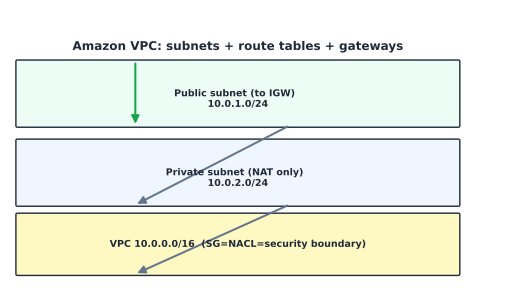

Computer Networks and Cloud Networking#
Learning Objectives#
Map the OSI and TCP/IP layers and their protocols.
Tell TCP from UDP and name key ports.
Explain routing and DNS.
Build an Amazon VPC with subnets, route tables, Security Groups.
The OSI Model#
The OSI Reference Model standardizes seven layers of network function.
{kind=link}

Fig. 8 OSI seven layers, from the host (top) down to the physical medium (bottom).#
Layer |
Name |
Data unit |
Protocols / examples |
|---|---|---|---|
7 |
Application |
data |
HTTP, HTTPS, SMTP, FTP, DNS |
6 |
Presentation |
data |
TLS, JPEG, encryption |
5 |
Session |
data |
session setup (NetBIOS) |
4 |
Transport |
Segment |
TCP / UDP |
3 |
Network |
Packet |
IP, ICMP |
2 |
Data Link |
Frame |
Ethernet, WiFi (MAC) |
1 |
Physical |
bit |
cable, voltage, radio |
Memory aid: All People Seem To Need Data Processing (layers 7→1). Upper three = host; lower four = media.
The TCP/IP Model#
{kind=link}

Fig. 9 TCP/IP collapses to four layers: Application, Transport, Internet, Link.#
TCP/IP layer |
Protocols |
|---|---|
Application |
HTTP/S, DNS, SSH, SMTP, FTP |
Transport |
TCP (reliable), UDP (fast) |
Internet |
IP, ICMP, ARP |
Link |
Ethernet, WiFi |
TCP vs. UDP#
Property |
TCP |
UDP |
|---|---|---|
Connection |
connection-oriented (3-way handshake) |
connectionless |
Ordering/reliability |
yes |
no |
Typical use |
web, SSH, email |
DNS, VoIP, streaming, gaming |
Well-known ports: 22 (SSH), 53 (DNS), 80 (HTTP), 443 (HTTPS), 3306 (MySQL).
Routing#
When hosts differ in network, a router forwards packets using routing tables + logical addresses.
Default gateway / route (
0.0.0.0/0) catches unmatched destinations.CIDR
10.0.0.0/16means the first 16 bits are the network portion.Static routing (manual) vs. dynamic (OSPF, BGP) vs. policy-based.
Host A (10.0.1.5) → default gateway → routers → Host B network → Host B (10.0.2.8)
DNS (Domain Name System)#
DNS maps human names to IPs. It’s a distributed, hierarchical, redundant database.
Recursive resolver -> (root) -> (.com TLD servers) -> (authoritative) -> IP
Record |
Meaning |
|---|---|
A |
IPv4 address |
AAAA |
IPv6 address |
CNAME |
alias |
MX |
mail server |
NS |
nameservers |
TXT |
text (SPF/DKIM) |
PTR |
reverse (IP→name) |
Amazon VPC#
A VPC is your logically-isolated virtual network in AWS: define a CIDR, subnets, route tables, gateways, and firewalls.
{kind=link}

Fig. 10 VPC with a public subnet (to IGW) and a private subnet (to NAT), guarded by SG/NACL.#
VPC building blocks#
Component |
Role |
|---|---|
CIDR |
the IP range, e.g., |
Subnet |
a slice/ AZ of the CIDR (public/private) |
Internet Gateway (IGW) |
egress to internet |
NAT Gateway |
private subnets reach internet (one-way) |
Route Table |
where traffic for each subnet goes |
Subnets, Route Tables, Security Groups#
Subnets#
Public subnet: route to IGW → instances get a public IP.
Private subnet: no IGW route; outbound via NAT Gateway (or a proxy).
One subnet per AZ; subnets do not span AZs.
Route tables#
A table of routes (destination CIDR + target). Each subnet binds to one route table;
the local route (the VPC CIDR) is always present. 0.0.0.0/0 → IGW for public,
→ NAT for private.
Security Groups vs. NACLs#
Feature |
Security Group |
Network ACL |
|---|---|---|
Layer |
ENI/instance |
subnet |
Stateful? |
yes |
no |
Rules |
allow-only |
allow + deny |
Evaluation |
per-port/protocol |
ordered by rule number |
Both are virtual firewalls; the SG is instance-local & stateful, the NACL is subnet-level & stateless with explicit allow/deny ordering.
Checkpoint#
Q1. Which OSI layer is responsible for switching, and what does a switch use?
Answer. Layer 2 (Data Link); switches forward frames using MAC addresses.
Q2. Why can a DNS resolver talk to a root server directly?
Answer. Because DNS is delegated hierarchically: roots delegate to TLDs which delegate to authoritative zones; the resolver follows referrals iteratively/recursively.
Q3. In a VPC, what single route makes a subnet public?
Answer. A route 0.0.0.0/0 whose target is the Internet Gateway (IGW).
Q4. What is stateful about a Security Group, and how does that affect return traffic?
Answer. SG rules are stateful: an outbound connection you allow does not need a matching inbound rule for the response (the response is auto-allowed).
Q5. Compare NACL allow/deny ordering to SG allow-only semantics in one sentence.
Answer. NACLs are stateless and evaluated by number (deny/allow, lowest first); SGs are stateful and only need explicit allow rules.
Sources#
The concepts in this chapter are summarized from the following authoritative sources:
OSI / TCP-IP models: Tanenbaum & van Steen, Distributed Systems
HTTP/1.1 (RFC 2616): https://www.rfc-editor.org/rfc/rfc2616
Amazon VPC User Guide: https://docs.aws.amazon.com/vpc/latest/userguide/
VPC security best practices: https://docs.aws.amazon.com/vpc/latest/userguide/vpc-security-best-practices.html